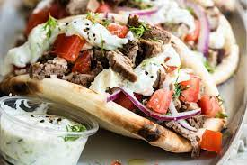

Gyros

Description
Gyros are delicious Greek street food items. Most of the ingredients are easy to find. You will need to purchase pre-made Gyro meat though for this recipe.
Most of this recipe is just putting together the ingredients. After purchasing the meat and tzatziki, the rest is easy.
Ingredients
- Pita Bread
- Tomatoes
- Onions
- Tzatziki Sauce
- Gyro meat or chicken
- (Optional)Feta cheese
Steps
- Warm the pita bread in the microwave for 15 seconds
- Layer 6 slices of gyro meat on the pita
- Lay slices of onion and tomato to taste
- Cover with Tzatziki Sauce to taste
- (Optional)Sprinkle on Feta and Parsley if desired